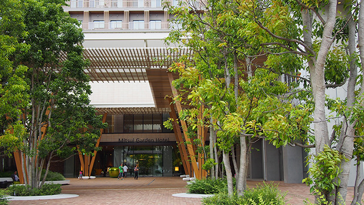
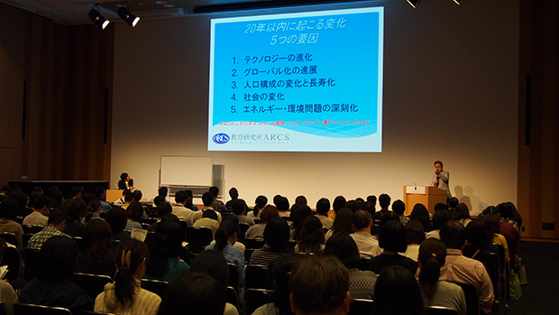
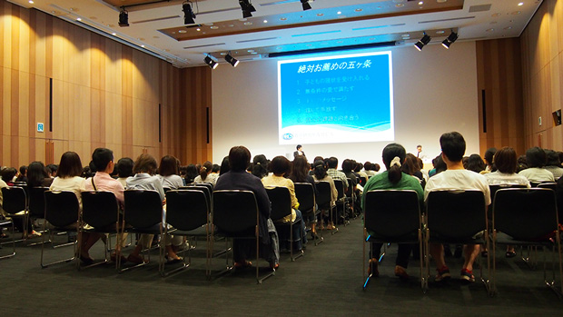
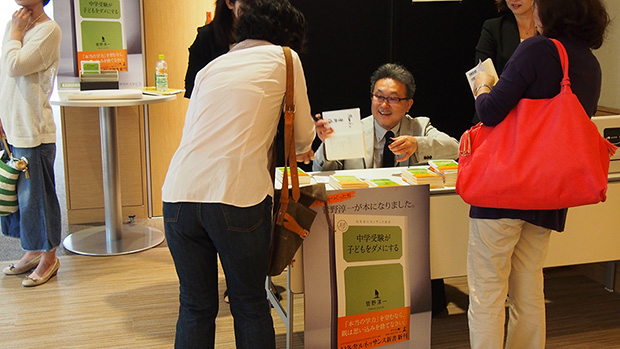

みなさんこんにちは！ 教育研究所ARCS事務局です。
2015年6月6日、学習塾クセジュ主催の教育講演会「子どもを伸ばす親のあり方」にARCS所長管野淳一が講師として講演して参りました。
写真、動画とともに当日の様子をレポートしていきます。
会場は柏の葉キャンパス駅徒歩1分の三井ガーデンホテルカンファレンスセンターです。ちなみにこの会場は、9月に行うARCS主催「私立高校説明会」と同じ会場となります。

当日は200名ほどの保護者がご参加くださいました。学習塾クセジュの保護者の方が多く見受けられるなか、所長管野の書籍をご購入くださり、はるばる遠方からご参加くださった方も！

さて、当日のお話は親の望む良い子の弱点、そして親が知るべき今必要な新しい力についてお話しました。
親が知るべき今必要な新しい力は「ワーク・シフト ― 孤独と貧困から自由になる働き方の未来図〈2025〉」を引用した未来予測に基づくお話をしました。
会終了後のアンケートではこのパートのお話に興味をもたれる方も多く、これからの子どもたちの生活を見据え必要となる能力を育むために必要な教育をお話しました。

会は進行し子どもの何に投資するか、お金だけでなく時間、労力、エネルギーをどう注ぐべきかをお話し、親のおかしがちな「七つの大罪」と題して、親が子どもにとって良かれと思ってしていること、無意識のうちにしていることが実は子どもの成長にとって妨げとなる可能性があるというお話をしました。
いよいよ会も大詰めです。所長管野の35年に渡る講師経験から導き出された「親の心がけ5か条」を発表しました。この5ヶ条はお土産として参加者全員にお配りしました。

最後は学習塾クセジュ代表鈴木久夫先生とのトークセッション。会の途中で鈴木先生が感じた疑問点や内容の補足を参加者を代表して行う形式です。
このトークセッションは随所に笑いを取り込んだ気楽に聞ける内容となりました。
当日の様子をまとめた動画をアップしました！
会終了後は所長管野の書籍を発売。ご購入くださった方からサインを頼まれ即席のサイン会が開催！

ご参加くださったみなさま、本当にありがとうございました。
教育研究所ARCSでは今後も教育講演会、セミナーを開催して参ります。
またのご参加を心からお待ちしております。